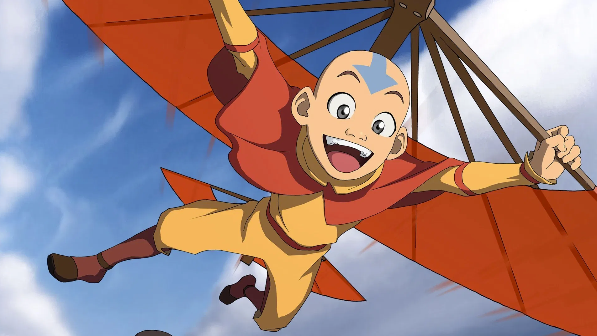
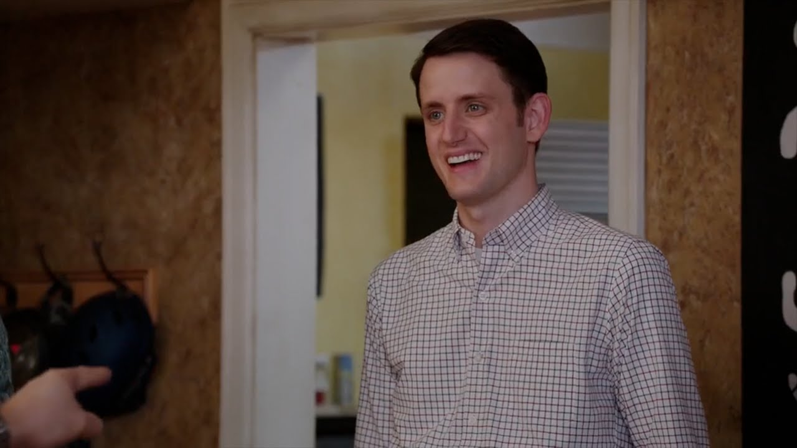
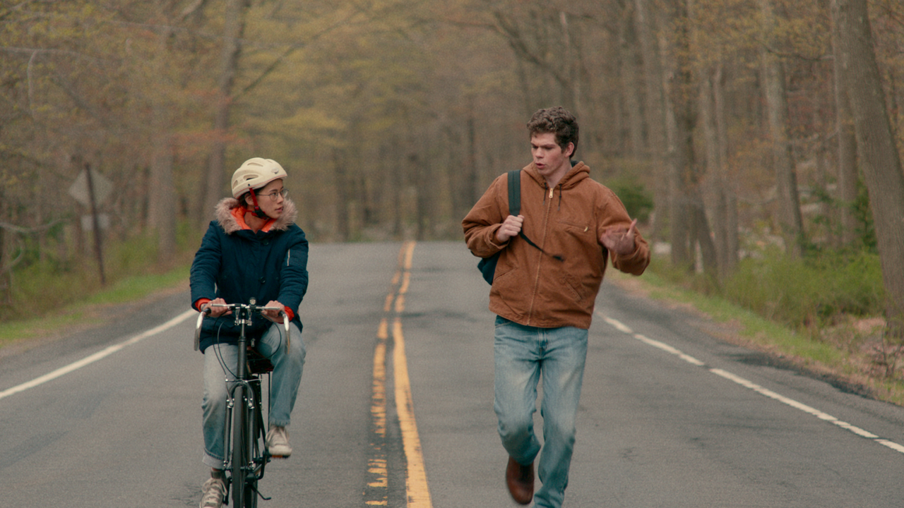
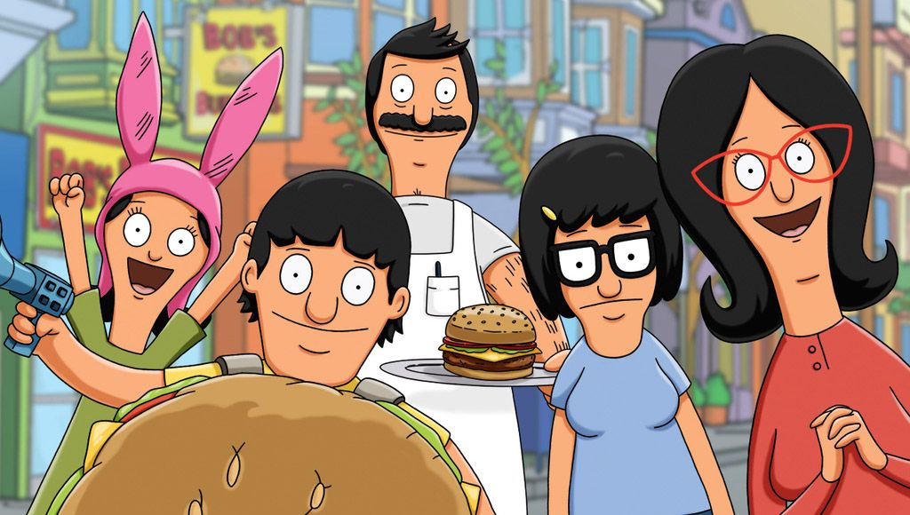

Aang
Avatar: The Last Airbender
Aang is so special. Why?
- He is the only surviving airbender.
- He chooses not to kill the Firelord because it just doesn't sit right with him.
- He is over 100 years old, but does not look a day over 12!
I am so proud of him.
Jonah Simms
Superstore
Just a really good guy. Your wit and optimism does not go unnoticed.
Jared (Donald) Dunn
Silicon Valley
An absolute hero and sweetheart.
Ellie Chu & Paul Munsky
The Half of It
Not a single character, but this dynamic duo is all that matters to me.
The Belcher Family
Bob's Burgers
Also, not a single character, but the Belcher Family is a family of champions.